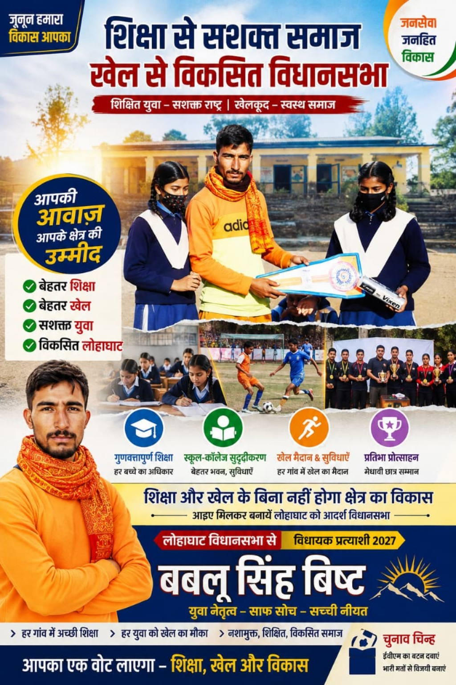
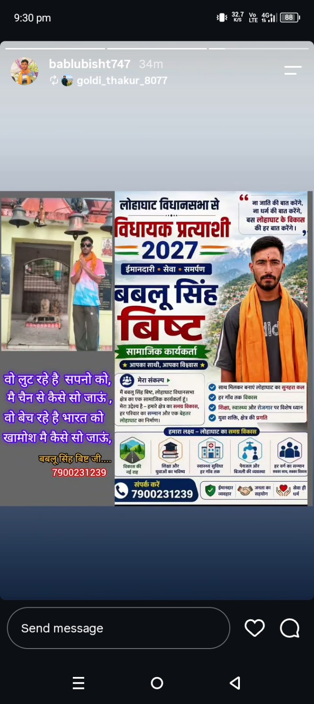

🙏 बकरियाज्यूला में आपका स्वागत है
यह Online Village Portal बकरियाज्यूला की स्थानीय जानकारी, व्यवसायों, जरूरी सेवाओं और गाँव की सूचनाओं को एक जगह उपलब्ध कराने के लिए बनाया गया है।
🏪 Business देखें 📍 गाँव का Map🏘️ हमारे गाँव के बारे में
बकरियाज्यूला (Bakarya Julla) चम्पावत जिले, उत्तराखंड में स्थित गाँव है। Census of India के आधिकारिक रिकॉर्ड में Bakarya Julla को चम्पावत के Barakot CD Block के अंतर्गत सूचीबद्ध किया गया है।
📍 जिला
उत्तराखंड
🏛️ क्षेत्र
CD Block
📮 PIN
उपलब्ध ऑनलाइन ग्राम रिकॉर्ड के अनुसार
नोट: स्थानीय/जनसांख्यिकीय विवरण समय के साथ बदल सकते हैं। विस्तृत Census आँकड़ों के लिए आधिकारिक रिकॉर्ड को प्राथमिकता दें।
🏪 बकरियाज्यूला के स्थानीय Business
गाँव की दुकानों और स्थानीय व्यवसायों की जानकारी यहाँ दिखाई जाएगी।
📝 अपना Business जोड़ेंयहाँ गाँव की दुकानों, सेवाओं और व्यवसायों को जोड़ा जाएगा।
📋 Business Directory
Business का नाम यहाँ
📍 बकरियाज्यूला
📞 मोबाइल नंबर
Business का नाम यहाँ
📍 बकरियाज्यूला
📞 मोबाइल नंबर
🛠️ जरूरी सेवाएँ
🎓 शिक्षा
विद्यालय, आंगनवाड़ी और आसपास की शिक्षा सुविधाओं की जानकारी।
🏥 स्वास्थ्य
नजदीकी अस्पताल, स्वास्थ्य केंद्र और मेडिकल सेवाओं की जानकारी यहाँ जोड़ी जा सकती है।
🏛️ सरकारी सेवाएँ
पंचायत, प्रमाणपत्र, योजनाएँ और नागरिक सेवाओं के उपयोगी लिंक यहाँ रखे जा सकते हैं।
🚜 कृषि
स्थानीय खेती, उत्पाद और किसानों से जुड़ी जानकारी यहाँ प्रकाशित की जा सकती है।
📢 गाँव की News / विशेष समाचार
यहाँ साझा की गई समाचार/पोस्ट की तस्वीरें प्रदर्शित की जा रही हैं। किसी दावे की स्वतंत्र पुष्टि इस वेबसाइट द्वारा नहीं की गई है।
📰 स्थानीय समाचार पोस्ट
स्रोत: उपलब्ध कराई गई तस्वीर

🎓 शिक्षा एवं खेल संबंधी पोस्ट
स्रोत: उपलब्ध कराई गई तस्वीर

📱 सोशल मीडिया पोस्ट
स्रोत: उपलब्ध कराई गई तस्वीर
📍 बकरियाज्यूला का Map
नीचे दिए बटन से Google Maps में बकरियाज्यूला खोजें:
🗺️ Google Maps खोलें🏪 अपना Business जोड़ें
बकरियाज्यूला के दुकानदार और स्थानीय व्यवसायी अपनी दुकान/Business की जानकारी यहाँ भेज सकते हैं।
📝 Business Form भरें 📸 दुकान की जानकारी भेजें📞 संपर्क / Business जोड़ें
किसी Business, दुकान, सेवा या गाँव की सूचना को वेबसाइट पर जोड़ने के लिए Website Admin से संपर्क करें।